Sobre los términos en inglés
Las cartas de Zombie Overlord están impresas en inglés, así que estas reglas conservan en inglés todos los términos que aparecen en ellas: Trap, Survivor, Minion, Supply, Scavenger, Barricade y demás. La primera vez que aparece cada uno lleva su equivalente en español entre paréntesis, y el glosario los recoge todos.
Las imágenes de esta página son las del reglamento impreso, también en inglés.
Bienvenido a Zombie Overlord
En Zombie Overlord eres un señor zombi que levanta un ejército de muertos vivientes para arrasar lo que queda del mundo. Lo único que se interpone en tu camino son los demás señores zombis, convencidos de que pueden devorar a la humanidad más rápido que tú. Pero tú sabes la verdad: eres el más despiadado de todos.
Tu objetivo es construir un mazo cada vez mayor de Minions (secuaces zombis) y lanzarlos contra tus rivales.
Construyes tu mazo comprando Traps (trampas) y usándolos para atraer a Survivors (supervivientes) desesperados desde el Wasteland (el páramo) hasta tu base. Una vez allí son devorados y convertidos en nuevos Minions. Cada Survivor busca un tipo de recurso distinto, y tú vas a aprovechar esa desesperación colocando los Traps adecuados para atraerlo. Usa las cartas de Supply (suministros) para comprar esos Traps tan tentadores en la Purchase Row (fila de compra).
Gana la partida, y se convierte en el Zombie Overlord, el último jugador que conserve puntos de vida.
Contenido de la caja
194 cartas
- 48 cartas de Trap
- 68 cartas de Survivor
- 28 cartas de Supply
- 20 cartas de Action
- 18 cartas de Scavenger
- 12 cartas de Minion
Lo demás
- 4 marcadores de puntos de vida
- 4 fichas para los marcadores
- 1 reglamento
Preparación
- Cada jugador empieza con una carta de Life Point Tracker (marcador de puntos de vida) y su ficha, 7 cartas de Supply y 3 cartas de Minion. Baraja esas cartas y colócalas boca abajo frente a ti para formar tu Draw Deck (mazo de robo), y devuelve a la caja las cartas de Supply y Minion que sobren. Coloca tu ficha en la casilla 50 de tu marcador. Después, cada jugador roba 5 cartas: esa es su mano inicial.
- Baraja las cartas de Trap y colócalas boca abajo. Retira las cartas de Trap cuyo icono de número de jugadores no coincida con los jugadores de la partida. Roba 5 cartas de Trap y colócalas boca arriba para formar la Purchase Row.
- En partidas de 2 jugadores, retira todas las cartas de Survivor con el icono de 3 a 4 jugadores. Baraja los Survivors restantes y coloca el mazo boca abajo debajo del mazo de Trap. Roba 1 carta de Survivor por jugador más 1, y colócalas boca arriba encima de la Purchase Row. Esto es el Wasteland.
- Baraja las cartas de Action y colócalas boca abajo.
- Coloca el mazo de Scavenger boca arriba.
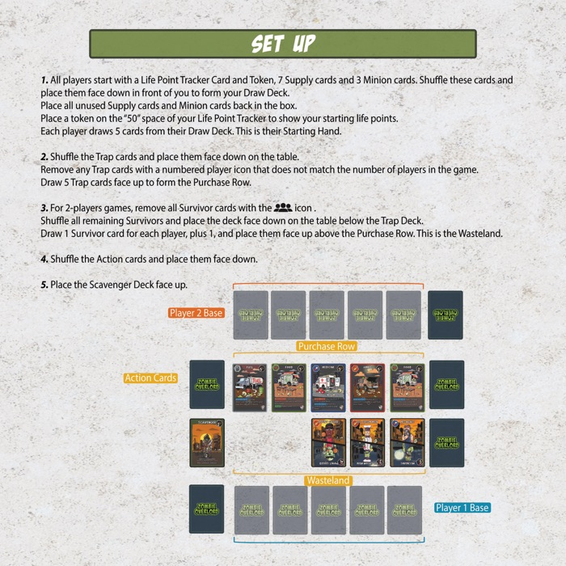
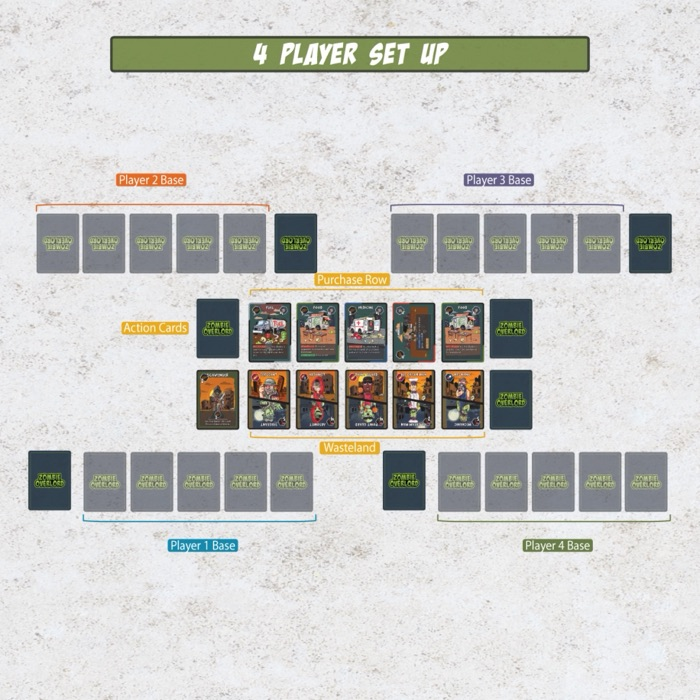
Secuencia de juego
El turno siempre empieza con Start Turn (inicio del turno) y siempre termina con Lure (señuelo), Clean Up (limpieza) y End Turn (fin del turno), en ese orden. Las tres fases intermedias (compra, acción y ataque) se pueden hacer en el orden que quieras, y puedes volver a cualquiera de ellas varias veces durante tu turno.
- Start Turn
- Activa todos tus Traps inactivos girándolos de nuevo a su posición vertical.
- Purchase
- Usa cartas de Supply y Scavenger de tu mano para comprar cartas de Trap, Action o Scavenger.
- Action
- Juega cartas de Trap y Action de tu mano, y usa las habilidades de tus Traps activos.
- Attack
- Envía cartas de Minion de tu mano a atacar a otros jugadores. Repártelos como quieras.
- Lure
- Los Survivors del Wasteland son atraídos hacia ti si tienes la mayor cantidad de Lure Points del tipo correspondiente.
- Clean Up
- Descarta el resto de tu mano en tu Discard Pile (pila de descarte) y roba 5 cartas.
- End Turn
- Tu turno termina y empieza el siguiente jugador.
Eliminación de jugadores
Si un jugador pierde todos sus puntos de vida, queda eliminado. Retira de la partida todas sus cartas, incluidas su mano, su Draw Deck, su Discard Pile, sus Traps y cualquier otra carta que controle, y devuélvelas a la caja.
Fase de compra
Los Traps se compran jugando cartas de Supply de tu mano. Suma los puntos de las cartas de Supply que juegues para obtener tu poder de compra. Cada carta de Trap muestra su coste arriba a la derecha.
- Todas las cartas que juegues durante la fase de compra van a tu Discard Pile.
- Todas las cartas compradas se colocan boca arriba en tu Discard Pile.
- En cuanto un Trap sale de la Purchase Row, repónlo de inmediato con la siguiente carta del mazo de Trap.
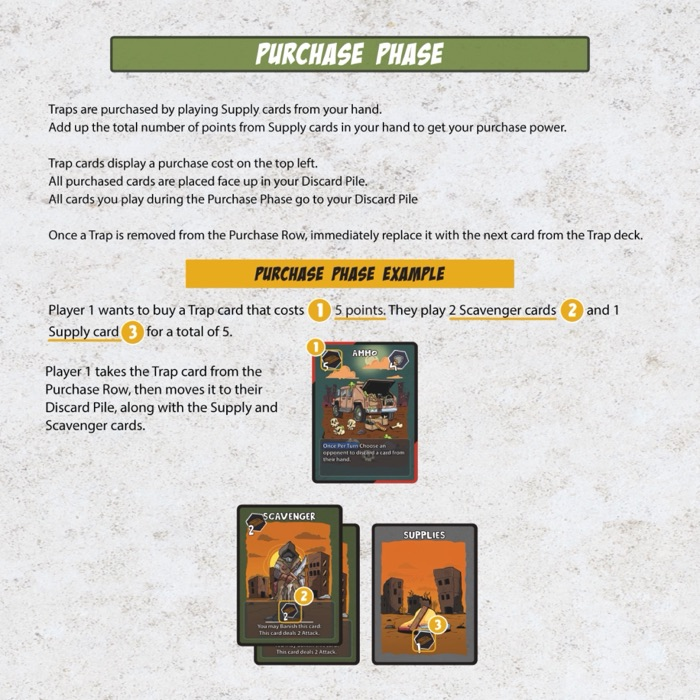
El reglamento impreso dice que el coste está arriba a la izquierda. En las cartas definitivas está arriba a la derecha, como se ve en la imagen.
Fase de acción
Colocar Traps
- Puedes tener un máximo de 5 Traps en tu base.
- Los Traps se colocan desde tu mano en cualquier hueco libre de tu base, y se consideran activos.
- Si ya tienes 5 Traps, puedes descartar uno activo para hacer sitio a otro nuevo.
- No puedes sustituir un Trap si ya has usado su habilidad este turno.
Usar habilidades
- Algunos Traps tienen habilidades que se activan al colocarlos. Hay que resolverlas antes de colocar más Traps.
- Los Traps con habilidades Once Per Turn (una vez por turno) se usan durante la fase de acción.
- Las cartas de Action también se juegan y se resuelven durante la fase de acción.
Fase de ataque
Atacar
Los Minions se usan para atacar a otros jugadores. Puedes atacar directamente a los puntos de vida de cualquier jugador, o a cualquier carta de Trap. Un mismo Minion no puede atacar a más de un objetivo, pero varios Minions se pueden agrupar para aumentar los puntos de ataque sobre un único objetivo.
Destruir
Puedes atacar los Traps de otro jugador para destruirlos o desactivarlos. Para destruir un Trap necesitas puntos de ataque iguales o superiores a su Defense (defensa). El número blanco grande de la esquina inferior derecha de la carta es el ataque necesario para destruirlo. Puedes combinar varios Minions contra un solo Trap. Los Traps destruidos van a la Discard Pile de su dueño.
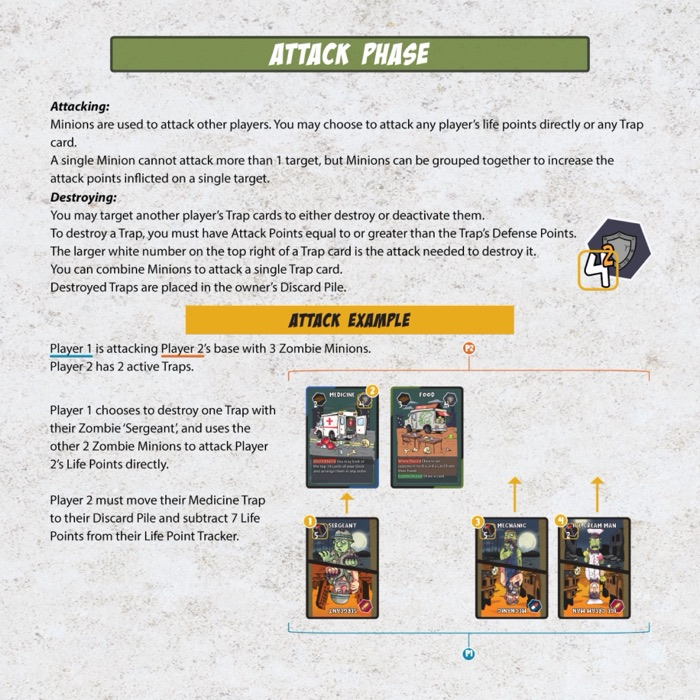
Desactivar Traps
Para desactivar un Trap necesitas puntos de ataque iguales o superiores al número rojo pequeño de la esquina inferior derecha de la carta. El Trap se gira de lado para indicar que está inactivo, y sigue así hasta el inicio del siguiente turno de su dueño.
- Los Traps inactivos no cuentan durante la fase de señuelo.
- No puedes usar las habilidades de un Trap mientras esté inactivo.
- Un Trap inactivo sigue necesitando su Defense completa, el número blanco grande, para ser destruido.
El sentido de destruir o desactivar los Traps de otro jugador es asegurarte de que tú consigues más Survivors durante la fase de señuelo.
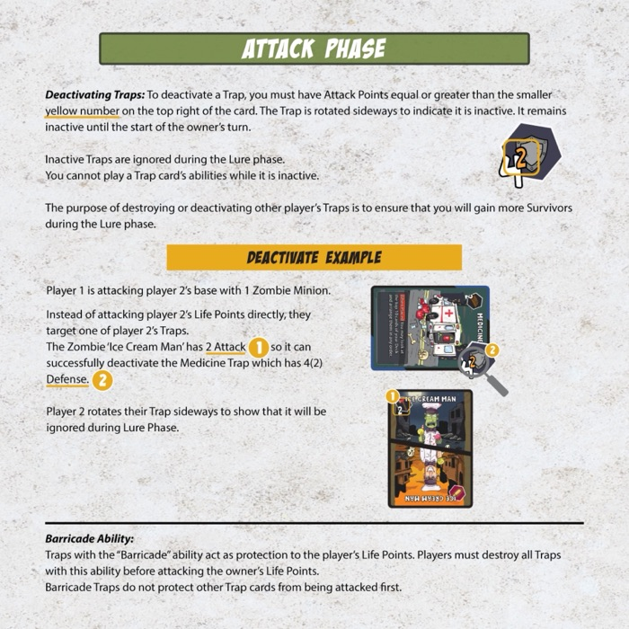
Barricade
Los Traps con la habilidad Barricade (barricada) protegen los puntos de vida de su dueño, incluso estando inactivos. Los rivales tienen que destruir todas las Barricades antes de poder atacar directamente a los puntos de vida de ese jugador. Las Barricades no protegen a los demás Traps del jugador.
Fase de señuelo
Todos los jugadores suman los Lure Points (puntos de señuelo) de sus Traps activos del tipo correspondiente. Cada Trap cuenta como 1 Lure Point.
- Si el jugador activo tiene la mayor cantidad del Lure Type (tipo de señuelo) correspondiente a uno o más Survivors del Wasteland, atrae a esos Survivors a su Discard Pile.
- Solo el jugador activo puede atraer Survivors durante la fase de señuelo.
- Si hay empate en Lure Points, ese Survivor se queda en el Wasteland.
- Los Survivors con dos Lure Types solo son atraídos si el jugador activo tiene el mayor total combinado de ambos tipos.
Cuando ya no se puede atraer a ningún Survivor más, repón todos los que se hayan llevado. Ahí termina la fase de señuelo. Los Survivors atraídos antes de la fase de señuelo, mediante cartas de Action o habilidades de Trap, no se reponen hasta el final de la misma.
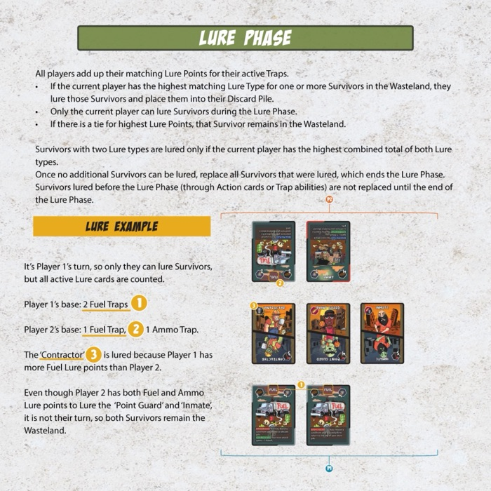
Fase de limpieza
Descarta todas las cartas que te queden en la mano a tu Discard Pile y roba 5 cartas nuevas.
Si te quedas sin cartas en el Draw Deck mientras robas, baraja tu Discard Pile y colócala boca abajo para formar un nuevo Draw Deck. Sigue robando hasta tener una mano completa de 5.
Ejemplo
Después de descartar tu mano te quedan 2 cartas en el Draw Deck. Roba esas 2, baraja tu Discard Pile para formar un nuevo Draw Deck y roba 3 más hasta llegar a una mano de 5.
Tipos de carta
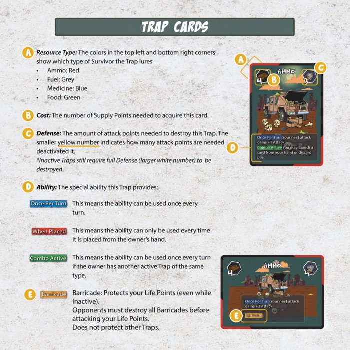
Cartas de Trap
- Tipo de recurso (arriba a la izquierda). Qué tipo de Survivor atrae el Trap. Las esquinas de color, arriba a la izquierda y abajo a la derecha, indican el tipo.
- Coste (arriba a la derecha). Los Supply Points necesarios para conseguir la carta.
- Defense (abajo a la derecha). El número blanco grande es el ataque necesario para destruir el Trap; el número rojo pequeño es el necesario para desactivarlo.
- Habilidad. La habilidad especial que aporta el Trap.
- Icono de número de jugadores (abajo a la izquierda). Los Traps con un icono numerado solo se usan en partidas con ese número de jugadores.
Palabras clave de habilidad
- Once Per Turn
- La habilidad se puede usar una vez por turno.
- When Placed
- La habilidad se usa cada vez que el Trap se coloca desde la mano de su dueño.
- Combo
- La habilidad se puede usar una vez por turno si el dueño tiene otro Trap activo del mismo tipo.
- Barricade
- Protege los puntos de vida de su dueño, incluso estando inactivo.
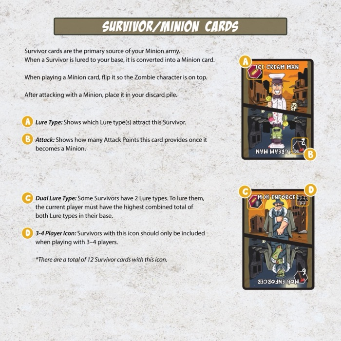
Cartas de Survivor y Minion
Los Survivors son la fuente principal de tu ejército de Minions. Cuando atraes a un Survivor a tu base, se convierte en un Minion y va a tu Discard Pile. Al jugar un Minion, dale la vuelta para que quede arriba el personaje zombi. Después de atacar, colócalo en tu Discard Pile.
- Lure Type. Qué tipo o tipos de señuelo atraen a este Survivor.
- Ataque. Los puntos de ataque que aporta la carta una vez convertida en Minion.
- Lure Type doble. Algunos Survivors tienen dos. Para atraerlos necesitas el mayor total combinado de ambos tipos en tu base.
- Icono de 3 a 4 jugadores. Inclúyelos solo en partidas de 3 o 4 jugadores. Hay 12 Survivors con este icono.
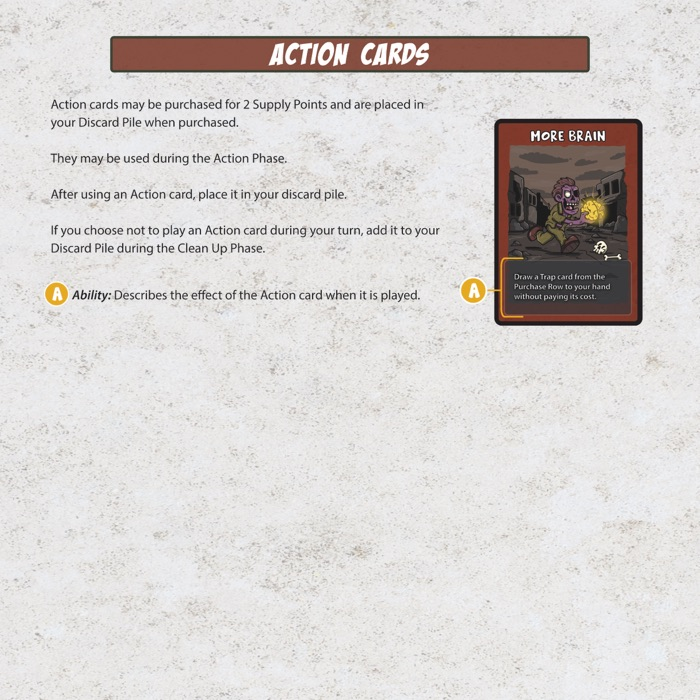
Cartas de Action
Las cartas de Action cuestan 2 Supply Points y van a tu Discard Pile al comprarlas. Se juegan durante la fase de acción y vuelven a tu Discard Pile después de usarlas. Si decides no jugar una en tu turno, va a la Discard Pile durante la fase de limpieza.
- Habilidad. Lo que hace la carta al jugarla.
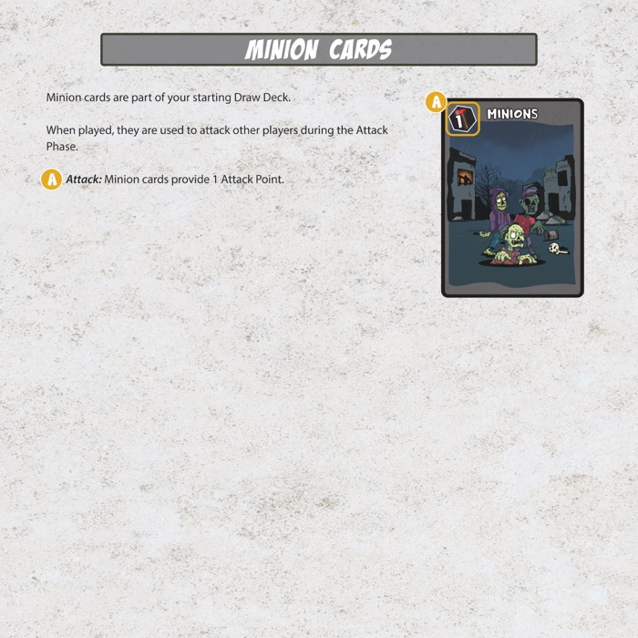
Cartas de Minion
Los Minions forman parte de tu Draw Deck inicial. Al jugarlos, atacan a otros jugadores durante la fase de ataque.
- Ataque. Las cartas de Minion aportan 1 punto de ataque.
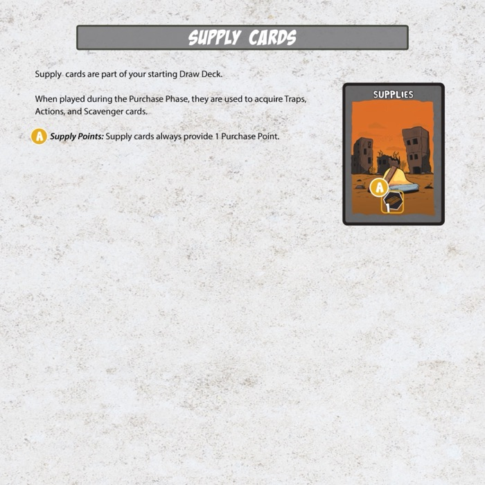
Cartas de Supply
Las cartas de Supply forman parte de tu Draw Deck inicial. Jugadas durante la fase de compra, sirven para comprar Traps, cartas de Action y Scavengers.
- Supply Points. Las cartas de Supply aportan siempre 1 punto de compra.
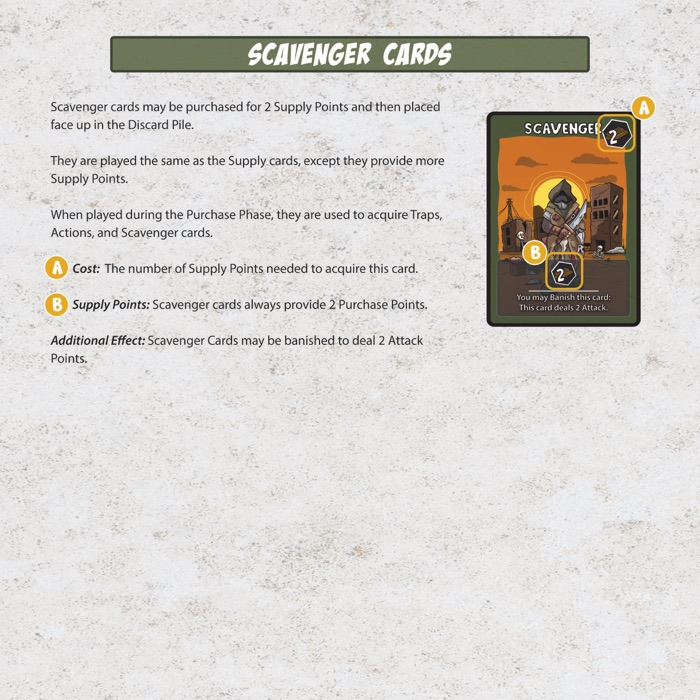
Cartas de Scavenger
Los Scavengers cuestan 2 Supply Points y se colocan boca arriba en tu Discard Pile al comprarlos. Se juegan igual que las cartas de Supply, pero valen más.
- Coste. Los Supply Points necesarios para conseguir la carta.
- Supply Points. Los Scavengers aportan siempre 2 puntos de compra.
- Efecto adicional. Un Scavenger se puede desterrar (banish) para infligir 2 puntos de ataque.
Jugar con la Misfits Mini Expansion
El juego base tiene 68 cartas de Survivor con 48 personajes distintos, porque 20 de ellos aparecen dos veces. La Misfits Mini Expansion añade 20 personajes nuevos, lo que eleva la plantilla a 68 distintos.
Los 20 Survivors repetidos llevan una pequeña marca blanca en la esquina superior derecha. Cámbialos por los 20 de la expansión y tu mazo mantiene el mismo tamaño, pero sin repeticiones. La expansión incluye sus propias reglas completas para el cambio, aunque la forma recomendada de jugar es el cambio directo de 20 por 20.
Esto no aparece en el reglamento impreso, porque no todo el mundo tiene la expansión.
Glosario
- Active Trap
- Trap activo. Un Trap en posición vertical y capaz de usar sus habilidades. Los Traps activos también aportan sus Lure Points durante la fase de señuelo.
- Banish
- Desterrar. Una carta desterrada va a la Banish Pile. Las cartas desterradas quedan fuera de la partida de forma permanente y no pueden volver.
- Base
- La zona delante de cada jugador donde se colocan sus Traps activos e inactivos.
- Converted
- Convertido. Cuando un Survivor es atraído con éxito, se convierte en Minion. Los Survivors convertidos se giran para dejar arriba la cara de Minion, con su fuerza de ataque.
- Destroy
- Destruir. Un Trap destruido se coloca boca arriba en la Discard Pile de su dueño.
- Discard
- Descartar. Una carta descartada se coloca boca arriba en la Discard Pile de su dueño.
- Draw Deck
- Mazo de robo. El mazo boca abajo del que cada jugador roba sus cartas.
- Mazos agotados
- Si el mazo de Trap o el de Survivor se acaba, la partida continúa con normalidad. No se añaden más Traps ni Survivors una vez agotados esos mazos.
- Lured
- Atraído. Cuando un jugador tiene la mayor cantidad del Lure Type correspondiente a un Survivor del Wasteland y se lo lleva, lo convierte en Minion y lo coloca boca arriba en su Discard Pile.
- Lure Type / Lure Points
- Tipo y puntos de señuelo. Aparece en los Survivors como un icono arriba a la izquierda, y en los Traps como las esquinas de color de arriba a la izquierda y abajo a la derecha. Hay cuatro: Ammo (munición), Fuel (combustible), Food (comida) y Medicine (medicina). Se usan en la fase de señuelo para determinar qué Survivors atrae el jugador activo.
- Purchase Points
- Puntos de compra. El total de Supply Points de las cartas de Supply y Scavenger que un jugador juega durante la fase de compra.
- Carta al azar
- Para robar una carta al azar de una mano, el jugador baraja su mano y elige una sin mirar.
Créditos
- Diseño y desarrollo
- Erick Quintanilla
- Ilustración
- Maximiliano Musso, Chino the Goat
- Agradecimientos
- Megan Quintanilla · Andres Luna · David Quintanilla · Andrew Smith · Gabe Cruz
Overlords
Mecenas fundadores que ayudaron a hacer realidad Zombie Overlord.
- Alex Kian
- Dave and Deanne Fisher
- Dory Alvarenga
- Emanuel Fuentes
- Jacob Simper
- Jameson Miller
- José Miguel Narciso Marques
- Keith Ono
- Mathew Pannell
- Matt Goodwin
- Michael Bryant
- Norman E Wirth
- Tahnee Copeland
Diseñado y publicado por Rising Warrior Games LLC, Chattanooga, Tennessee.
Zombie Overlord está disponible en reserva, con los envíos a partir de noviembre de 2026.